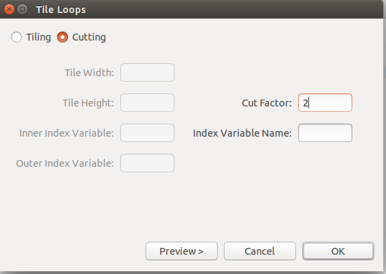
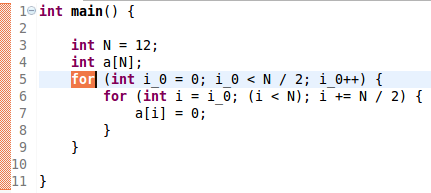

Tile Loops
Use:
Traditionally, tiling is used to ensure that data used in a loop is kept in the cache.
On a GPU, a "strided" variant of tiling can be used to assign multiple loop
iterations to a single thread while ensuring that adjacent iterations are assigned to
different threads (for memory coalescing).
Description:
Traditional tiling executes Strip Mining and Interchange on a two-dimensional iteration space to then iterate in blocks. The strided variant executes a Strip Mine and Interchange on a one-dimensional iteration to then iterate in blocks.
Example:
- Select the desired for loop to be changed and choose Tiling under the Refactoring menu.

- Next make sure Tiling is selected and then enter the desired height and width.

- The resulting for loop.

- If strided tiling is desired please make sure that its selected and enter the stride width.

- The resulting for loop.

Restrictions:
- Must be a two-dimensional perfectly nested loop structure
- Loop may not have a pragma attached to it.
- The selected loop cannot carry dependence in the less than direction and be in the greater than direction after interchange as occurred.
- The selected loop cannot carry dependence in the greater than direction and be in the less than direction after interchange as occurred.